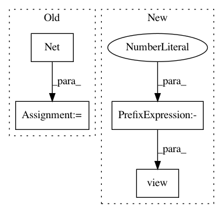

960518e2734a42f7da19dc3d4d49501004c037e1,mnist/main.py,,,#,54
Before Change
x = self.relu(self.fc2(x))
return self.softmax(x)
model = Net().cuda()
criterion = nn.ClassNLLCriterion()
// Training settings
BATCH_SIZE = 150
TEST_BATCH_SIZE = 1000
NUM_EPOCHS = 2
optimizer = optim.SGD(model, lr=1e-2, momentum=0.9)
def train(epoch):
batch_data = Variable(torch.cuda.FloatTensor(BATCH_SIZE, 1, 28, 28), requires_grad=False)
batch_targets = Variable(torch.cuda.FloatTensor(BATCH_SIZE), requires_grad=False)
After Change
with open("data/processed/test.pt", "rb") as f:
test_set = torch.load(f)
training_data = training_set[0].view(-1, 1, 28, 28).div(255)
training_labels = training_set[1]
test_data = test_set[0].view(-1, 1, 28, 28).div(255)
test_labels = test_set[1]
In pattern: SUPERPATTERN
Frequency: 3
Non-data size: 4
Instances
Project Name: OpenNMT/OpenNMT-py
Commit Name: 960518e2734a42f7da19dc3d4d49501004c037e1
Time: 2016-09-25
Author: cfarabet@twitter.com
File Name: mnist/main.py
Class Name:
Method Name:
Project Name: rusty1s/pytorch_geometric
Commit Name: cf1cc19bb79ae4128ef5437279de475835374a46
Time: 2019-03-19
Author: matthias.fey@tu-dortmund.de
File Name: benchmark/runtime/dgl/train.py
Class Name:
Method Name: train_runtime